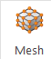
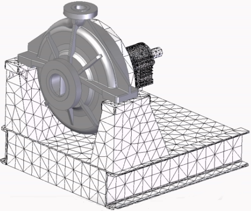

Mesh the model
-
Choose Simulation tab→Mesh group→Mesh

.Tip:-
The Mesh command is available when the study definition is complete. It uses the mesh type specified by the active study. Mesh type, in turn, is based on your model geometry.
-
You can mesh the model without loads or constraints, but you must assign a material.
-
-
In the Mesh dialog box:
-
(Optional) Click the Options button, and then make adjustments to the default meshing options in the Mesh Options dialog box.
-
(Optional) In an assembly, you can use the Same Component Mesh Size check box to control whether all assembly components are meshed using the same mesh size, or the mesh size is adjusted automatically with the size of individual components.
-
Click one of the following buttons to start the process:
-
Mesh—Choose this option to generate the mesh only. This enables you to review the mesh and adjust mesh sizing before solving the analysis.
-
Mesh & Solve—Choose this option if you do not need to refine the mesh by sizing it. When processing is finished, the analysis data will be displayed automatically in the Simulation Results environment.
-
A progress meter is displayed for you to monitor the duration and status of the process.
-
If the mesh is small enough, the meshed geometry is displayed in the graphics window. The number of nodes and number of elements in the mesh are shown in PromptBar. This is the current mesh size.
-
You can make the mesh smaller or larger by selecting the Mesh command again, and then adjusting the Subjective Mesh Size using the slider.
-
If you chose the Mesh button and meshing fails, see Resolving meshing errors.
-
If you chose the Mesh & Solve option and processing stops due to a solve error, the NX Nastran Solve Error dialog box is displayed.
-
-
With the mesh displayed, you can identify areas that may need to be improved. For more information, see Examining the mesh and Identifying areas of poor quality.
-
If you already generated the initial mesh using the Mesh command, you can use one of the mesh sizing commands to fine-tune its density, shape, boundary, and other properties. For more information, see Mesh sizing.
-
If you want to delete the mesh and start over instead of updating the mesh, you can use the following commands on the context menu of the Simulation pane→Mesh node:
-
Delete Mesh—Deletes the mesh for a part or sheet metal model, or a selected body mesh in an assembly.
-
Delete All Mesh—Deletes the meshes on all the bodies in the assembly.

-
How do I
Activity: Use subjective mesh sizingActivity: Apply a surface mesh to a sheet metal part
Activity: Size the mesh on an edge
Activity: Size the mesh on a surface
Learn more
MeshesMesh sizing
Examining the mesh
Identifying areas of poor mesh quality
Look up more details
Mesh dialog boxMesh Options dialog box
Body Size dialog box
Edge Size dialog box
Surface Size dialog box
Check Element Quality